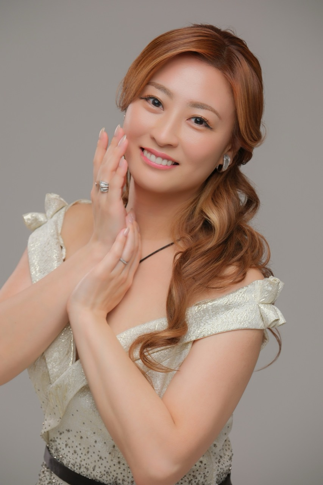

小野 友葵子
Yukiko Ono 公式サイトを見る ↗ソプラノ歌手・錦戸部屋女将。北海道中標津町出身。4歳でエレクトーン、6歳よりピアノを始める。昭和音楽大学声楽科、同大学研究科を卒業。
第19回大阪国際音楽コンクール入選、第20回大阪国際音楽コンクール『エスポアール賞』受賞、第21回大阪国際音楽コンクール第3位。第1回日本クラシック声楽コンコルソ第2位。
ソロリサイタルをはじめコンサート、テレビ、ラジオに出演。クラシック、ポップスのボイストレーナー、講演、朗読、新聞や雑誌のコラム連載、経営者向けインタビューDVD教材のアシスタントMCを務めるなど、活動は多岐に亘る。
カフェから大ホールまで、ジャンルを越えた作品を歌うコンサートは常に好評を博しており、情感豊かな表現や飾らないトークは好感度が高い。
近年は歌手としての出演にとどまらず、多くの公演において企画立案からキャスティング、構成、制作、演出、広報、運営までを自ら一貫して担い、コンサート制作を手掛けている。ロックとオペラ、落語とオペラなどの異ジャンルコラボも成功させ、独自の視点からの企画力、プロデュース力にも注目されている。
また東日本大震災被災地、北海道胆振東部地震被災地にて《被災地にお花と笑顔を！》プロジェクトを独自に実施。福島・岩手、北海道むかわ町の学校や施設に足を運び、花植えやコンサート、寄付などを行なっている。
BS-TBS『日本名曲アルバム』に出演。『日伊国交150周年記念 M.カッラーロ指揮 東京ニューシティ管弦楽団 Opera Gala Concert』に出演。自身プロデュースオペラ『椿姫』ヴィオレッタ役でオペラデビューし、イタリア・ゴヴォーネ城でのコンサートにも出演。
2015年よりミラノにも拠点を置き、イタリア各地でもコンサートに出演。2018年よりオペラやコンサートの企画・プロデュースも手掛け、若手オペラ歌手グループ『I BOCCIOLI』のプロデュースにも力を入れている。
2022年2月から2026年4月まで自身のラジオレギュラー冠番組『小野友葵子のBella Serata!!（鳥越アズーリFM）』を放送。2022年5月よりクレープアリサ東京（武蔵小山）での『MERENDA月1カフェコンサート』がスタート。2024年7月3日、キングレコードよりメジャーデビューシングル『あなたへ』をリリース。
国際ジェロントロジー大学校特任教授。一般社団法人日本歌手協会会員。
トップページへ戻る